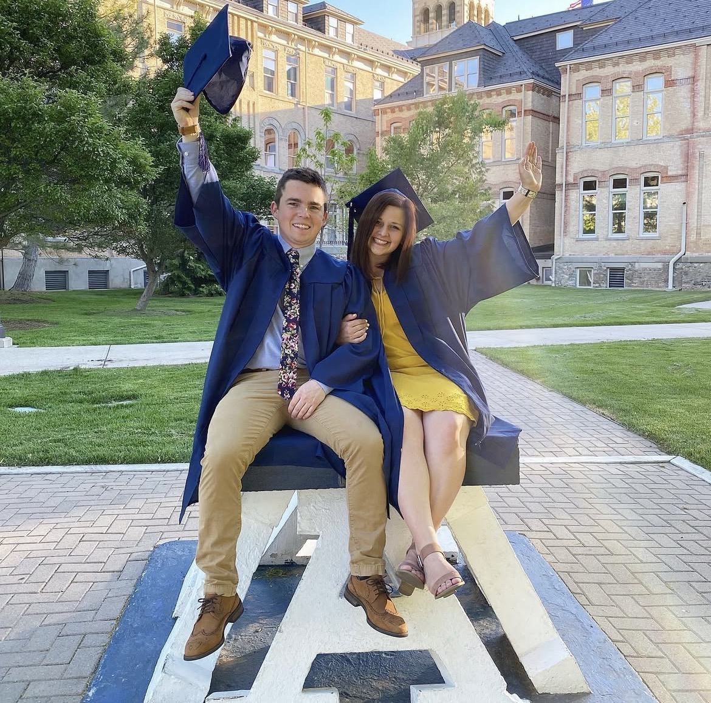
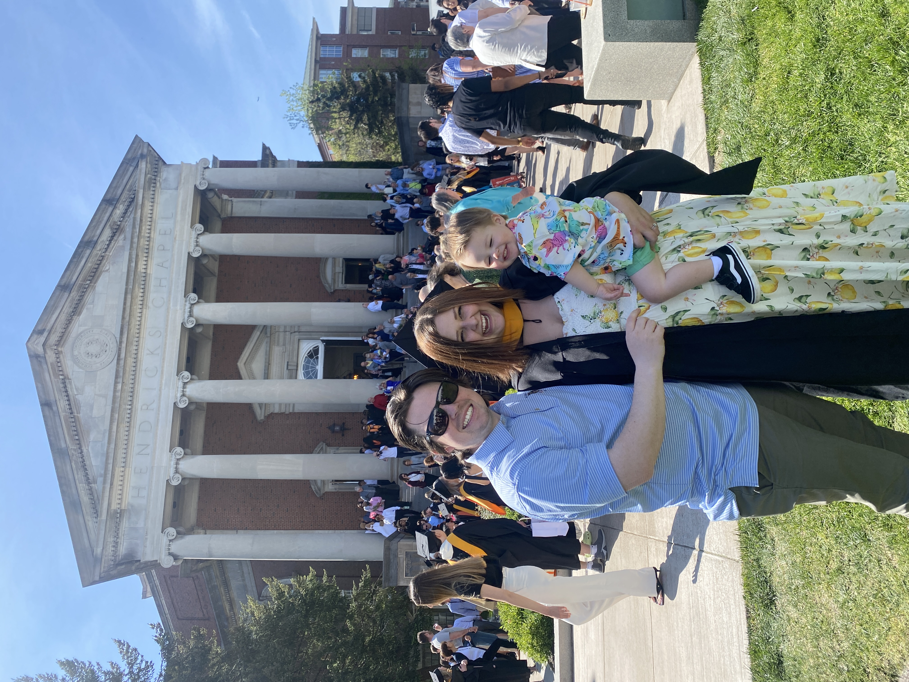

Master's in SLP
Master of Science in Speech-Language Pathology — [University Placeholder]
Get to know the person behind Lion Street Learning — my story, my qualifications, and the values that guide every single session.
My journey into speech-language pathology began with a simple but profound belief: every child deserves to be heard. Growing up, I watched a close family member struggle to communicate, and I saw firsthand the frustration, isolation, and lost opportunities that came with it. That experience lit a fire in me.
I went on to earn my Master's degree in Speech-Language Pathology and spent the early years of my career working in school settings, pediatric clinics, and early intervention programs. Over time, I realized that the most powerful transformations happen in small, personalized environments — where the child feels truly seen and supported.
That's why I founded Lion Street Learning: to create a space where children don't just receive therapy or tutoring, but gain the confidence and skills that open doors for a lifetime.
When I'm not working with children, you'll find me reading, hiking with my dog, or volunteering with local literacy nonprofits. I live and breathe this work — and I'd be honored to support your family.
Book a Free ConsultationEvery step along the way shaped the specialist — and the person — I am today.

My passion for communication sciences took root at Utah State, where I completed my undergraduate studies in Communication Disorders. It was here that I first understood the profound impact a skilled specialist can have on a child's life — and knew this was the path for me.

I earned my Master of Science in Speech-Language Pathology from Syracuse University, one of the nation's top programs. Through rigorous clinical training across schools, hospitals, and early intervention settings, I built the evidence-based foundation that shapes every session I run today.

My first professional role brought me to Ability Innovations, where I worked directly with children with a wide range of developmental and communication differences. This experience deepened my commitment to individualized care and reinforced my belief that every child — regardless of their starting point — deserves to be heard.

Today, I bring everything I've learned — every classroom, every clinic, every child — into Lion Street Learning. This practice is the culmination of years of training, experience, and heart. I am so grateful to do this work every day, and even more grateful for the families who trust me with the most important people in their lives.
A strong academic foundation and continuous professional development ensure the highest standard of care for every child.
Master of Science in Speech-Language Pathology — [University Placeholder]
Certificate of Clinical Competence in Speech-Language Pathology (CCC-SLP)
Certified Reading Specialist with expertise in phonics, fluency, and comprehension
Certified Early Childhood Intervention Specialist — ages birth through 5
Advanced training in pediatric language processing and cognitive communication disorders
Certified in family-centered practice and parent/caregiver coaching methodologies
State-licensed educator with credentials in K–6 general and special education
Annual CEUs maintained — committed to current best practices and emerging research
These principles aren't just words on a wall — they shape every interaction, every plan, and every milestone we celebrate together.
I believe every child has a roar inside them waiting to come out. My job is to help them find it safely, on their own terms and timeline.
Progress is a team effort. I work hand-in-hand with families, teachers, and other specialists to build a consistent, supportive network around each child.
Every technique I use is grounded in peer-reviewed research. I continuously update my practice to reflect the latest findings in child development and education.
Children thrive when they feel safe and loved. I lead every session with empathy, patience, and genuine enthusiasm for each child's unique personality.
Every session has a clear intention. We set meaningful, measurable goals together and celebrate each step forward — big or small.
I model the same growth mindset I teach — continually learning, adapting, and improving so I can give every child the very best support possible.